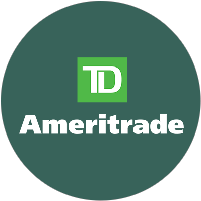
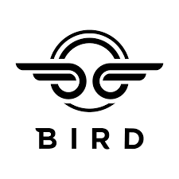
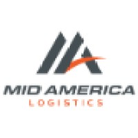
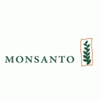
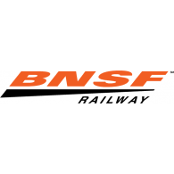

<!DOCTYPE html>
<html>

<head>
  <meta name="viewport" content="width=device-width, initial-scale=1.0">
  <title>Dan Cashion Resume Timeline</title>
  <link rel="stylesheet" href="style.css">

</html>

<body>

  <div class="timeline">

    <div class="container left-container">
      
      <div class="text-box">
        <h2>TD Ameritrade</h2>
        <small>2020 - 2022</small>
        <p>Educated clients about investment products, trading tools, market mechanics, and retirement
          choices.
          In addition, I was responsible for providing excellent customer service to clients and
          prospective clients.
          I took ownership of client issues and resolved them in a timely manner. I also assisted in the
          development of new employees.
        </p>
        <span class="left-container-arrow"></span>
      </div>
    </div>

    <div class="container right-container">      
      
      <div class="text-box">
        <h2>Bloom Technology formerly Lambda School</h2>
        <small>2019-2020</small>
        <p>Studied Full Stack Web development. Learned HTML, CSS, JavaScript, React, Node, Express,
          Python, and SQL. I also learned how to work in a team environment and how to work with product
          owners.
        </p>
        <span class="right-container-arrow"></span>
      </div>
    </div>

    <div class="container left-container">
      
      <div class="text-box">
        <h2>Bird Rides</h2>
        <small>2018 - 2019</small>
        <p>Opened the St. Louis market for Bird Rides. I was responsible for the training of new
          employees and the opening and management of the St. Louis warehouse.
          I also assisted in the development of new regional markets.
        </p>
        <span class="left-container-arrow"></span>
      </div>
    </div>

    <div class="container right-container">
      
      <div class="text-box">
        <h2>TD Ameritrade</h2>
        <small>2017 - 2018</small>
        <p>Educated clients about investment products, trading tools, market mechanics, and
          retirement choices.
          In addition, I was responsible for providing excellent customer service to clients
          and prospective clients. I took ownership of client issues and resolved them in a timely manner. I
          also
          assisted in the development of new employees.
        </p>
        <span class="right-container-arrow"></span>
      </div>
    </div>

    <div class="container left-container">
      
      <div class="text-box">
        <h2>Mid America Logistics</h2>
        <small>2014 - 2017</small>
        <p>Developed and procured over $12 million dollars in yearly revenue. Increased
          year over year revenue by 20% leading the company in overall sales.
          Mentored new team members on sales tactics and best practices.
          Responsible for completing and maintaining customer RFP, RFQ, or yearly bid.
          Tasked to troubleshoot and test new internal applications.
          Created workflow systems for team efficiency and workload management.
        </p>
        <span class="left-container-arrow"></span>
      </div>
    </div>

    <div class="container right-container">
      
      <div class="text-box">
        <h2>Monsanto</h2>
        <small>2014 - 2017</small>
        <p>Provide ongoing analysis in areas such as transportation costs, parts procurement, back orders,
          or delivery processes.
          Maintain yearly bid for current and incumbent carriers.
          Managed over 4000 out of system freight moves monthly.
          Confer with logistics management teams to determine ways to optimize service levels and
          maintain supply chain efficiency and minimize cost.
          Recommend improvements to existing or planned logistics process.
        </p>
        <span class="right-container-arrow"></span>
      </div>
    </div>
    
    <div class="container left-container">
      
      <div class="text-box">
        <h2>BNSF Logistics</h2>
        <small>2015 - 2017</small>
        <p>Qualified and prepared customer freight solutions. Developed organizational directives for the
          implementation of logistics assets. Trained management and peer level assets on LTL freight procedures and competencies as well
          as authored an LTL training methodology.
        </p>
        <span class="left-container-arrow"></span>
      </div>
    </div>

  </div>
  </div>


</body>

</html>